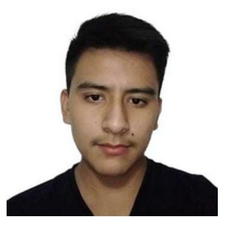

Soy Carlos Enrique Rojas Mendoza, estudiante de Ingeniería de Sistemas en la Universidad NUR.
Me apasiona la programación, la resolución de problemas y la creación de soluciones tecnológicas innovadoras.
Tengo experiencia en el desarrollo de aplicaciones, bases de datos y proyectos con interfaces gráficas.
Formación Académica
- Colegio Don Bosco - Bachillerato
- Universidad NUR - Ingeniería de Sistemas (en curso)
Habilidades Profesionales
- Lenguajes de Programación: Java, Python, C++, HTML, JavaScript
- Bases de Datos: MySQL, PostgreSQL
- Frameworks y Herramientas: Tkinter, Processing, Git
- Otros: Redes, mantenimiento de computadoras, Arduino